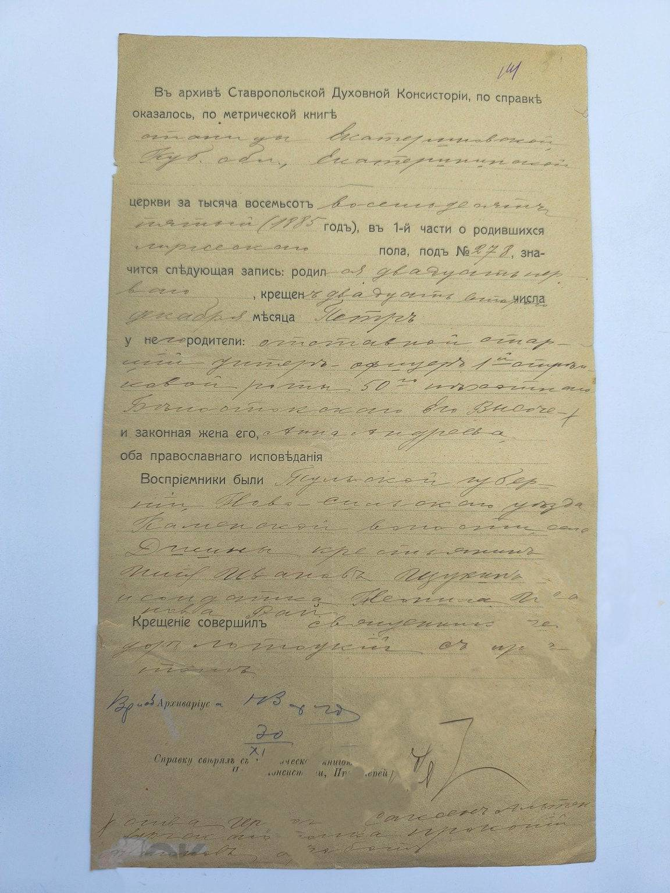

Метрическая выписка · станица Екатериновская 1885
Выписка из метрической книги: рождение Петра, запись №278
Справка архива Ставропольской духовной консистории по метрической книге Екатерининской церкви станицы Екатериновской за 1885 год. В записи названы родившийся Пётр, его родители Прокопий Антонов Дробот и Анна Андреева и восприемники из села Дишня Тульской губернии.
Снимок
Бланк консисторской справки, заполненный от руки. Нажмите на снимок, чтобы открыть его в полном размере.

Справка архива Ставропольской духовной консистории, лист выписки.
Расшифровка
Текст дан в написании подлинника. Печатный текст бланка набран обычным шрифтом, вписанное от руки выделено курсивом. Места, которые на снимке не читаются, показаны многоточием в квадратных скобках, спорные чтения помечены знаком вопроса.
Въ архивѣ Ставропольской Духовной Консисторіи, по справкѣ оказалось, по метрической книгѣ станицы Екатериновской Куб. обл., Екатерининской церкви за тысяча восемьсотъ восемьдесятъ пятый (1885 годъ), въ 1-й части о родившихся мужескаго пола, подъ № 278, значится слѣдующая запись: родился двадцать первого, крещенъ двадцать втораго числа декабря мѣсяца Петръ; у него родители: отставной старшій унтеръ-офицеръ 1-й стрѣлковой роты 50-го пѣхотнаго Бѣлостокскаго Его Высоче- [продолжение вписано внизу листа под знаком «+»: ства Герцога Саксенъ-Альтенбургскаго полка Прокопій Антоновъ Дроботъ] и законная жена его, Анна Андреева, оба православнаго исповѣданія.
Воспріемники были: Тульской губерніи, Ново-сильскаго уѣзда, Каменской волости, села Дишни, крестьянинъ Петръ Ивановъ Щукинъ и солдатка Неонила Иванова Рай.
Крещеніе совершилъ священникъ Георгій Лотоцкій (?) съ причтомъ.
Врио Архиваріуса [подпись и вписанный номер не читаются] 30/XI [год не читается]
Справку свѣрялъ съ […]ческою книгою […] Консисторіи, Пр[…]ерей [повреждение бумаги]
Помета в правом верхнем углу листа не прочитана.
Что взято из выписки
| Родился | Пётр, 21 декабря 1885 года, крещён 22 декабря. Станица Екатериновская, Екатерининская церковь. Запись №278, часть 1 «о родившихся», мужской пол. |
|---|---|
| Родители | Прокопий Антонов Дробот, отставной старший унтер-офицер 1-й стрелковой роты 50-го пехотного Белостокского Его Высочества Герцога Саксен-Альтенбургского полка, и законная жена его Анна Андреева, оба православного исповедания. Род Дробот в справочнике родов. |
| Восприемники | Крестьянин Пётр Иванов Щукин и солдатка Неонила Иванова Рай. Род Щукин в справочнике родов. |
| Место приписки восприемников | Тульская губерния, Новосильский уезд, Каменская волость, село Дишня ( |
| Крещение | Совершил священник с причтом (имя читается предположительно). |
Расшифровка: Fundus, по снимку выписки из семейного архива. Документ входит в справочник родов станицы Екатериновская.